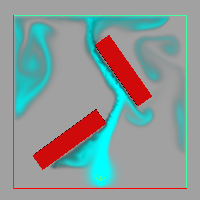

可以使流体发生碰撞，而非通过多边形曲面或 NURBS 曲面。在发生碰撞时，流体或对象，亦或是两者均可以移动。流体不能与其他流体发生碰撞。

使流体与几何体发生碰撞
- 创建动态流体。
有关详细信息，请参见动态栅格(Dynamic Grids)。
- 移动流体容器内要与流体碰撞的几何体。该几何体必须位于容器内，才能受到流体的影响。
- 选择流体容器和几何体（顺序并不重要）。
- 选择 >
 ，或者单击 。
，或者单击 。
此时会出现“使碰撞选项”(Make Collide Options)窗口。
- 更改“细分因子”(Tessellation Factor)（若必要）并单击“应用并关闭”(Apply and Close)。
Maya 会在为模拟设置动画之前在内部将 NURBS 对象转换为多边形。“细分因子”(Tessellation Factor)可以设置在转换过程中所创建的多边形的数量。数量越少，创建的几何体就越粗糙，并会降低动画的精确度（即，有更多的流体看似通过几何体），但会加快播放速度和缩短处理时间。
“细分因子”(Tessellation Factor)的默认值为 200。根据需要，可多次尝试倍增该值以获得所需的平滑度。（在“属性编辑器”(Attribute Editor)中选择几何体并单击 geoConnector 选项卡。）
- 使用 Maya 窗口底部的播放控件来播放模拟。
提示：
- 为了最大限度地减少流体与对象接触位置的锯齿效果，Maya 会将流体重新分布到相邻的体素中，并在渲染时软化锯齿边。重新分布流体可能会导致出现流体通过或“渗入”对象的效果。如果使用封闭不透明的碰撞对象，则已渗入的流体将不明显。将“渲染插值器”(Render Interpolator)属性设置为线性应该会最大限度地减少在渲染时渗入的流体数量。
- 对碰撞几何体（尤其包含修剪或其他构建历史）使用 NURBS 会影响性能。
- 如果碰撞对象的网格具有复杂的凹面，请尝试三角化更大的面以防止流体填充内部区域。对所有边执行“删除组件”(Delete Components)（通过选择“编辑网格 > 删除组件”(Edit Mesh > Delete Components)），以删除小的内部面，然后三角化和四边形化该面，使几何体更滑顺。
- 若要避免几何体边的周围出现三角形外观，请细分导致最多问题的面。
禁用碰撞效果
可以暂时禁用速度播放的碰撞效果。
暂时禁用碰撞效果
- 选择流体容器。
- 在 fluidShape“属性编辑器”(Attribute Editor)的“动力学模拟”(Dynamic Simulation)部分中，禁用“使用碰撞”(Use Collisions)。
禁用碰撞效果
- 选择流体容器。
- 选择“窗口 > 关系编辑器 > 动力学关系”(Windows > Relationship Editors > Dynamic Relationships)以打开“动力学关系”(Dynamic Relationships)编辑器。
- 在“选择模式”(Selection Modes)部分中，选择“碰撞”(Collisions)。
左列亮显碰撞流体对象。右列亮显碰撞对象。
- 在右列中，单击亮显的碰撞对象。
也可以在“Hypergraph”中删除链接到流体和碰撞对象的 geoConnector 节点。
此时该项目不再亮显，表示它已断开连接。有关使用“动力学关系”(Dynamic Relationships)编辑器的详细信息，请参见“动力学关系编辑器”(Dynamic Relationships Editor)。